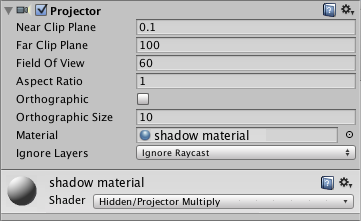

Projector
A Projector allows you to project a Material onto all objects that intersect its frustum. The material must use a special type of shader for the projection effect to work correctly - see the projector prefabs in Unity's standard assets for examples of how to use the supplied Projector/Light and Projector/Multiply shaders.

Properties
| Property: | Function: |
|---|---|
| Near Clip Plane | Objects in front of the near clip plane will not be projected upon. |
| Far Clip Plane | Objects beyond this distance will not be affected. |
| Field Of View | The field of view in degrees. This is only used if the Projector is not Ortho Graphic. |
| Aspect Ratio | The Aspect Ratio of the Projector. This allows you to tune the height vs width of the Projector. |
| Is Ortho Graphic | If enabled, the Projector will be Ortho Graphic instead of perspective. |
| Ortho Graphic Size | The Ortho Graphic size of the Projection. this is only used if Is Ortho Graphic is turned on. |
| Material | The Material that will be Projected onto Objects. |
| Ignore Layers | Objects that are in one of the Ignore Layers will not be affected. By default, Ignore Layers is none so all geometry that intersects the Projector frustum will be affected. |
Details
With a projector you can:
- Create shadows.
- Make a real world projector on a tripod with another Camera that films some other part of the world using a Render Texture.
- Create bullet marks.
- Funky lighting effects.

If you want to create a simple shadow effect, simply drag the StandardAssets->Blob-Shadow->Blob shadow projector Prefab into your scene. You can modify the Material to use a different Blob shadow texture.
Note: When creating a projector, always be sure to set the wrap mode of the texture's material of the projector to clamp. else the projector's texture will be seen repeated and you will not achieve the desired effect of shadow over your character.
Hints
- Projector Blob shadows can create very impressive Splinter Cell-like lighting effects if used to shadow the environment properly.
- When no Falloff Texture is used in the projector's Material, it can project both forward and backward, creating "double projection". To fix this, use an alpha-only Falloff texture that has a black leftmost pixel column.